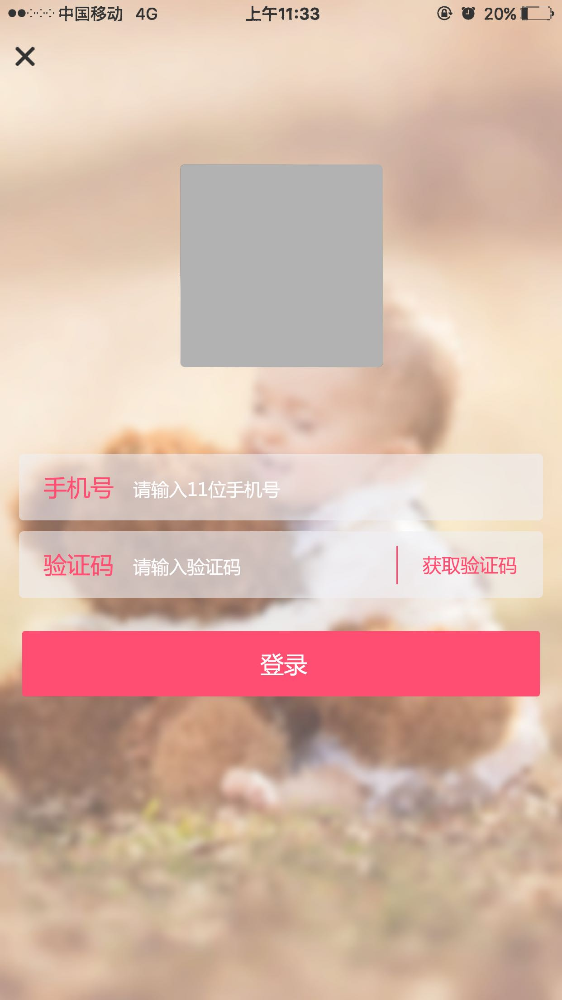

1、使用手机号和验证码登录app
2、初始化直接进入app，用户可以以游客形式查看 所有商品信息，
当用户购买等关键性操作时，如果未登录，弹出登录框，需用
户登录进行下一步操作
3、限制条件：
a）手机号为11位数字
b）验证码为6位数字
c）当用户点击手机号或验证码输入框，弹出数字键盘
d）获取验证码60秒倒计时
e）用户登录后30天内没有登录，30天后重新登录
f）用户登录后30天内最后一天登录，后延续7天自动登录，如用户7天内
未登录，超过7天后用户重新登录